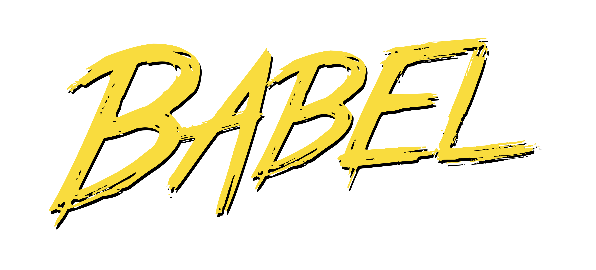

بسم الله الرحمن الرحیم
در آن نفس که بمیرم در آرزوی تو باشم
بدان امید دهم جان که خاک کوی تو باشم
بدان امید دهم جان که خاک کوی تو باشم
دنبال یه راه که نظم یگانه و توسعه پذیری یگانه و خیلی چیزای یگانه دیگه
داشته باشه میگشتند که اسمش شد
مونوریپـــــــــــــــــــــــــــــــــــــو
چه ابزارهایی وجود دارم
بریم چندتا نمونه ببینیم
 React
React
React یه سری چیزای دیگه با
ابزارهای معروفی که خود فیسبوک توسعه نداده ولی برای React و React
Native ساخته شدن
 Next JS
Next JS
 Vue JS
Vue JS
 Angular
Angular

Babel
بابل چی هست : یه کامپایلر برای جاواسکریپت که تقریبا همه ی پروژه های
بزرگ برای تبدیل جاواسکریپت ۶ و ۷ و ۸ و ۹ به ۵.۱ یا هر چیز دیگه ازش
استفاده میکنن
 Purge CSS
Purge CSS
 cypress
cypress
این چینیا
اینارو هیچ کدوم رو نمیشناسم ولی تا دلت بخواد چینیا با
مونوریپـــــــــــــــــــــــــــــــــــــو پروژه خوب زدن 🧐
حالا چرا React in Monorepo